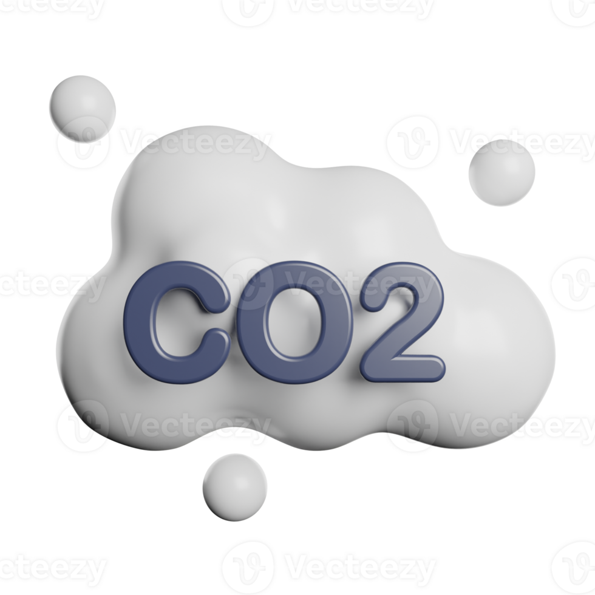

¿Qué es CO2?

El CO2 o tambien conocido como dioxido de carbono, es un gas incoloro e inhodoro
este elemento quimico compone el aire que respiramos.
Niveles de CO2
Los niveles de CO2 se miden en partes por millon (ppm), estos son los niveles en aire
ambiente:
- Hasta 350 ppm: Calidad del aire alta.
- De 350-500 ppm: Calidad del aire buena.
- 500-800 ppm: El aire es moderado.
- 800-1200+: La calidad del aire es mala.
Daños a la salud por niveles altos de CO2
Efectos a corto plazo: Por encima de 1,000 ppm provoca síntomas como dolores de cabeza,
confución y somnolencia.
Efectos a largo plazo: La exposición prolongada a altas concntraciones pueden afectar
la función cognitiva y la capacidad de tomar decisiones. Puede haber un deterioro en el
rendimiento fisico y mental.
Asfixia: Es en altas concentraciones de más de 7,000 ppm.
HCHO
El formaldehido varian constantemente, los niveles de HCHO en el aire ambiente:
- Bajo: menos de 0,3 mg/m3
- Aceptable: 0, a 0,5 mg/m3
- Marginal: 0,5 a 1 mg/m3
- Alto: 1 a 3 mg/m3
Daños en la salud por niveles altos de HCHO
Efectos agudos a corto plazo:
- Irritación de las mucosas
- Ojos: Ardor, lagrimeo, picazón, enrojecimiento, visión borrosa y posible daño
en concentraciones muy altas.
- Nariz: Irritación, tos y sensación de ardor.
- Garganta: Dolor, tos y sensación de ardor
- Vías respiratorias: Dificultad para respirar, broncoespamos e incluso edema pulmonar
- Irritación en la piel: Enrojecimiento, picazón, demartitis de contacto y posibles quemaduras químicas
Efectos crónicos a largo plazo se presentan problemas como cáncer de nasofaringe, de
seno paranasal y cavidad nasal, y leucemia mieloide. Se pueden representar problemas respiratorios
crónicos como la bronquitis, hiperractividad bronquial y asma, también se pueden presentar efectos
neurológicos como cambios de humor, dificultad para concentarse y pérdida de memoria, se puede presentar en perdida de
olfato (anosmia) y puede tener efectos reproductivos como transtornos mentruales en mujeres.
TVOC
Es una mezcla de compuestos orgánicos volátiles totales, como el benceno, el formaldehído, el tolueno y la acetona.
Estos compuestos se evaporn fácilmente a temperatura ambiente.
Niveles de TVOC
Este compuesto se puede medir en miligramos por metro cubico (mg/m3):
En niveles aceptables 0 a 0,3 mg/m3; de 0,3 a 0,5 es moderado y de 0,5 en adelante es una zona de riesgo
Dato curioso:
¿Influye la humedad y la temperatura en la calidad del aire?
Como se menciono anteriormente los compuestos orgánicos volátiles totales (TVOC)
se eveaporan fácilmente a temperatura ambiente; entonces si hay un gran aumento de temperatura, este compuesto puede llegar a salir en grandes cantidades.
Pues bien una humedad alta facilita la formación de contaminantes, debido a las reacciones aceleradas por la presencia de vapor de agua.
Además, el aire húmedo puede atrapar y concentrar contaminates cerca de la superficie, impidiendo su dispersión vertical. Se relaciona mucho
con el tipo de temperatura, ya que, enre menos humedad en zonas semidesérticas actúan como sumideros de CO2 disminuyendo los niveles de este gas.
Mientrtas que la temperatura influte en la volatilidad de los TVOC, aumentando su evaporación. En contraste
a las bajas temperaturas que pueden generar inversiones térmicas, donde una capa de aire frio queda atrapada cerca del suelo
por una capa de aire más cálido, impidiendo la dispersión de contaminantes emitidos.
RESULTADOS
Mediciones
| Lugar |
Hora |
Fecha |
Niveles de CO2(ppm) |
Niveles de HCHO
mg/m3 |
Niveles de TVOC
mg/m3 |
Temperatura °C |
Humedad |
| Puntilla Aldama, San Rafael, Ver. |
8:17 |
26-04-2025 | 0843 | 0.013 | 0.153 |
35 | 48% |
| A. Guadalupe Victoria | 8:47 | 26-04-2025 |
0959 | 0.010 | 0.121 | 35 | 48 |
| San Rafael, Ver. | 9:15 | 27-04-2025 | 0430 |
0.001 | 0.001 | 30 | 64% |
| San Rafael,Ver. | 22:36 | 27-04-2025 | 0425 |
0.001 | 0.001 | 26 | 73% |
| Calle principal, Emiliano Zapata | 6:50 | 28-04-2025 |
0452 | 0.012 | 0.145 | 31 | 58% |
| Calle principal, Emiliano Zapata | 19:30 | 28-04-2025 |
0423 | 0.003 | 0.022 | 29 | 68% |
| San Rafael, Ver | 8:40 | 30-04-2025 | 0428 |
0.001 | 0.001 | 32 | 64% |
| Calle principal, Emiliano Zapata | 6:47 | 3-05-2025 |
1994 | 0.049 | 0.435 | 30 | 44% |
| Calle principal, Emiliano Zapata | 6:51 | 3-05-2025 |
1580 | 0.001 | 0.001 | 30 | 44% |
| Calle principal, Emiliano Zapata | 6:57 | 3-05-2025 |
1170 | 0.001 | 0.001 | 30 | 44% |
| San Rafael, Ver. | 16:42 | 4-05-2025 | 3076 |
0.063 | 0.510 | 35 | 57% |
| San Rafael, Ver. | 16:46 | 4-05-2025 | 1688 |
0.001 | 0.001 | 35 | 55% |
| San Rafael, Ver. | 4:55 | 4-05-2025 | 1388 |
0.001 | 0.001 | 32 | 56% |
| San Rafael, Ver. | 5:05 | 4-05-2025 | 1044 |
0.001 | 0.001 | 34 | 55% |
| San Rafael, Ver. | 5:17 | 4-05-2025 | 0548 |
0.001 | 0.001 | 34 | 55% |
| libny |
Con la tabla se muestran los diferentes niveles de CO2, TVOC, HCHO, temperatura y humedad,
en la zona de San Rafael y sus alrededores; estas medicones y lecturas obtenidas
son de acuerdo a los horarios en que las perosnas deciden quemar basura con el objetivo de determinar
el alcance de estos compuestos, como se muestra a continuación: